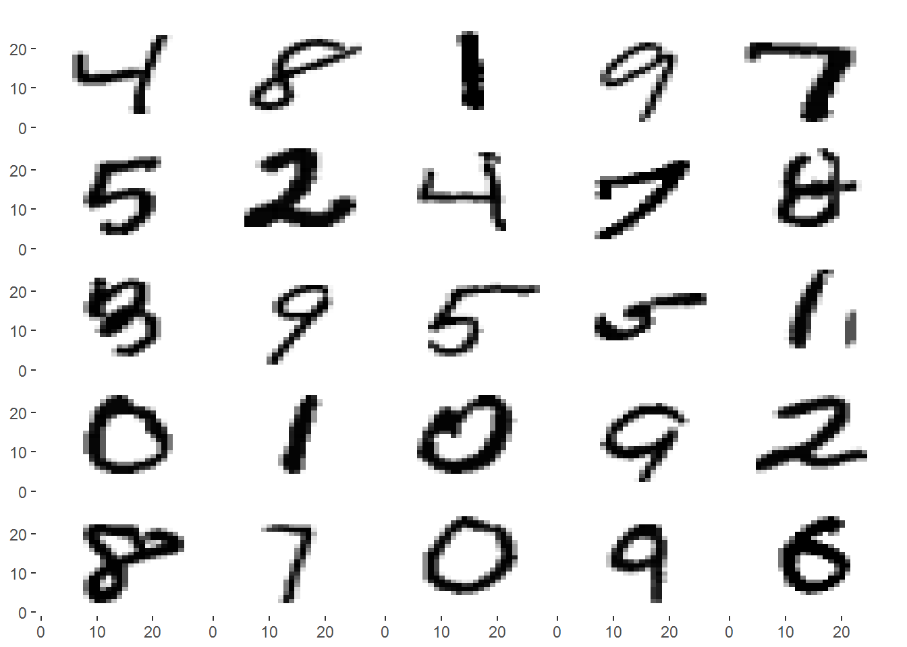

Digit Recognition - Building a neural network from scratch in R
Notes from my very first project: building a simple neural network for handwritten digit recognition
Published
September 30, 2016
Update: On 3rd March 2017, I presented a workshop based on this project at the Bath Machine Learning Meetup. You can see the event page here!
Motivation for this project
A few months ago I was introduced to data science and machine learning by a friend. Since then I have developed a great interest in the field, and recently my imagination has been captured by the topic of neural networks.
Combining this, a desire to improve my programming skills, my irrational fondness for R as a programming language, and a digit recognition challenge hosted online by Kaggle, I decided to create, train and utilize a simple neural network - entirely from scratch - within R.
The neural network: methodology and notes
Setting up the environment
I have used two packages other than those included with base R: reshape2 and ggplot2, both of which are widely-used packages that can be installed from the CRAN repository. These are used within the visualize function (and its variants) to simplify the plotting process; I shall explain exactly how this is done later on.
library(reshape2)library(ggplot2)# Set seed, for reproducibility of 'random' samples found laterset.seed(1234)
Functions
I have broken down the construction and training of the neural network into several functions. These functions are:
computeCost
computeGrad
loadData
makeSets
optLambda
optNeurons
predict
randomInitParams
sigmoid
sigmoidGradient
visualize
visualizeBW
visualizeMulti
I will explain the purpose of each of them at the time that they are used in the project.
Inspecting the data
The data is provided in two .csv files. We will talk about test.csv later - for now we’ll focus on the first file, train.csv, which contains 42000 rows of data in 785 columns. Each row corresponds to one 28x28 pixel grayscale image of a handwritten digit from 0 to 9. The first column is a label indicating which digit is represented in the image. The next 784 columns are an ‘unrolled’ representation of the image: the first 28 entries represent the first row of the image, the next 28 represent the second row, and so on. Each entry has a value from 0 to 255 representing the ‘intensity’ of the pixel it represents. Let’s examine the first row of train.csv:
It is difficult to see what the image is from this raw data alone. Instead, we can visualize the data with a plot: this is the purpose of the visualize function.
# visualize recreates a square image from the unrolled matrix that represents itvisualize <-function(imgvec) { n <-length(imgvec)# Reshape the vector into a matrix img <-matrix(imgvec, sqrt(n))# Reformat the data for plotting imgmelt <-melt(img) p <-ggplot(imgmelt, aes(x = Var1, y =-Var2 +sqrt(n) +1)) +geom_raster(aes(fill = imgmelt$value)) +scale_fill_gradient(low ="white", high ="black", guide =FALSE) +labs(x =NULL, y =NULL, fill =NULL)print(p) }
The image vector, not including the label, is reshaped into a square matrix img. This matrix is then ‘melted’ into a long-format dataframe using reshape2’s melt function: this replaces the spatial position of each pixel in the image with two attributes Var1 and Var2, representing the row and column of the pixel. This dataframe is passed to ggplot and each pixel is plotted on a scale from white (pixels with value 0) to black (pixel of highest value; usually 255).
# Read in first training image, except the label in the first column, and# convert to numeric vectorimg <-as.numeric( read.csv("data/train.csv", header =TRUE, nrows =1)[-c(1)] )visualize(img)
It’s now clear to us that this image is of the digit 1 - as confirmed by its label. We will look at some more examples shortly, but first we will read the data into R.
Loading and tidying the data
The function loadData is used to load the training and test data into the R workspace (up to an optional cutoff point):
# loadData reads in train and test data and stores them in the workspaceloadData <-function(directory ="data", cutoff) {if(missing(cutoff)) {print("Reading training examples...") train <<-read.csv( paste0(directory, "/train.csv"))print("Reading test examples...") test <<-read.csv( paste0(directory, "/test.csv")) } else {print("Reading training examples...") train <<-read.csv( paste0(directory, "/train.csv"), nrows = cutoff)print("Reading test examples...") test <<-read.csv( paste0(directory, "/test.csv"), nrows = cutoff ) }print("Data loaded!")}
loadData()
## [1] "Reading training examples..."
## [1] "Reading test examples..."
## [1] "Data loaded!"
For now we’ll focus on the train data, which will be used to train and evaluate the performance of the neural network. The data are currently in a large dataframe where each row corresponds to an image; the first column contains the label, and the subsequent columns contain the pixel values, as described earlier.
The function makeSets performs two jobs. First it separates the labels from the image data. Each value in the image data is scaled from 0 to 1 since this improves the network’s performance. The data is then divided into three matrices: xtrain, xval and xtest. These contain 60%, 20% and 20% of the examples respectively. The labels are split into numeric vectors ytrain, yval and ytest in the same way. Note that the first entry of ytrain is the label for the first row of xtrain, and so on. The new matrices and vectors are stored in the workspace. Note: Labels of 0 are replaced with 10 in the y~ vectors - this is to avoid computation issues which may arise later (since R indexes vectors from 1 rather than 0).
# makeSets creates training, cross-validation and test sets from a set of datamakeSets <-function(dataset) { m <-nrow(dataset) x <-as.matrix(dataset[, -c(1)])# Scale values from 0 to 1 since this improves performance x <- x /max(x) xtrain <<- x[1:floor(m*0.6), ] xval <<- x[(floor(m*0.6) +1):floor(m*0.8), ] xtest <<- x[(floor(m*0.8) +1):m, ] y <-as.numeric(dataset[, 1])# Turn 0-labels into 10-labels; this will simplify later computation y[y ==0] <-10 ytrain <<- y[1:floor(m*0.6)] yval <<- y[(floor(m*0.6) +1):floor(m*0.8)] ytest <<- y[(floor(m*0.8) +1):m]}
makeSets(train)
Each of these sets has a specific purpose: xtrain (the training set) will be used to train the network, xval (the cross-validation set) will be used to adjust the network’s hyper-parameters (see the next section), and xtest will be used to evaluate the overall performance of the network.
Now that the data are in a nicer format for calculations, we can look at some more examples of images represented in xtrain using visualizeMulti, a slight adaptation of the visualize function.
# visualizeMulti recreates images from the unrolled matrices that represent themvisualizeMulti <-function(imgvecs) {print("Converting data type...")# R drops a 1-row matrix to a vector by default; undo this, if it occurs imgvecs <-as.matrix(imgvecs)# Number of images m <-dim(imgvecs)[1]# Number of pixels per image n <-dim(imgvecs)[2] imgs <-vector(mode ="list", length = m)# Reformat each image vector as a square matrixfor(i in1:m) { imgs[[i]] <-matrix(imgvecs[i, ], sqrt(n)) }#Use reshape2's melt function to convert into a long-form data frame imgmelt <-melt(imgs)print("Plotting images...") p <-ggplot(imgmelt) +facet_wrap(~L1) +geom_raster(aes(x = Var1, y = (-Var2 +sqrt(n) +1),fill = imgmelt$value)) +scale_fill_gradient(high ="black", low ="white", guide =FALSE) +labs(x =NULL, y =NULL, fill =NULL) +theme(strip.background =element_blank(),strip.text.x =element_blank(),panel.margin =unit(0, "lines"),panel.background =element_blank(),panel.border =element_blank())print(p)print("Visualization complete!")}
s <-sample(1:dim(xtrain)[1], 25)visualizeMulti(xtrain[s, ])
## [1] "Converting data type..."
## [1] "Plotting images..."

## [1] "Visualization complete!"
Setting hyper-parameters
The hyper-parameters of the network are responsible for the structure of the network and for fine-tuning its performance. There are two hyper-parameters which will remain fixed for this network: these are input_layer_size and output_layer_size. The input layer is just the raw input into the network, which in this case is the 784-length vector representing an image. The output layer will give the ‘result’ of that input, which we want to be a value from 1 to 10 representing the digit in the image (recall 0 is labelled as 10).
The neural network will have two other hyper-parameters which can be adjusted later using the cross-validation set xval. The first of these is hidden_layer_size, which sets how many neurons will be present in the hidden layer of the network and therefore how many features will be learned by the network. The second is lambda, which will control the ‘strictness’ of regularization of the parameters: the higher the value, the harsher the penalty for overly specialized features. This will help prevent the network overfitting the training data, and then performing poorly on the test data.
# Fixed-value hyper-parametersinput_layer_size <-dim(xtrain)[2]output_layer_size <-10# Hyper-parameters to be adjusted laterhidden_layer_size <-25lambda <-1
Initializing parameters
The parameters, or weights, of the network are what allows it to learn. To avoid multiple neurons learning the same features, these weights must be initialized to small random numbers, rather than just 0. The function randomInitParams performs this task.
# randomInitParams outputs a random parameter vector for reshaping into Theta1# and Theta2randomInitParams <-function(input_layer_size, hidden_layer_size, output_layer_size) {# Initialize an epsilon (the following expression produces the recommended# epsilon value for the sigmoid activation function) epsilon <-sqrt(6) /sqrt(input_layer_size + output_layer_size)# Create a vector with enough entries to fill the parameter matrices Theta1# and Theta2 , where each entry is somewhere between epsilon and -epsilon n <- ((input_layer_size +1) * hidden_layer_size) + ((hidden_layer_size +1) * output_layer_size)runif(n, min =-epsilon, max = epsilon)}
An underlying principle of machine learning is to minimize a cost function (or objective function) by adjusting parameters. The calculation of the cost for this network is handled by computeCost.
# computeCost computes the cost function of the networkcomputeCost <-function(init_params, input_layer_size, hidden_layer_size, output_layer_size, X, y, lambda) {#=============== Parameters and useful variables ===============## Reshape init_params into Theta1 and Theta2 k <- (input_layer_size +1) * hidden_layer_size Theta1 <-matrix(init_params[1:k], hidden_layer_size, input_layer_size +1) Theta2 <-matrix(init_params[(k +1):length(init_params)], output_layer_size, hidden_layer_size +1)# m is the number of training examples m <-dim(X)[1]#=============== (Unregularized) forward propagation ===============## Add bias unit to each example a1 <-cbind(rep(1, m), X)# Calculate raw hidden layer output z2 <- a1 %*%t(Theta1)# Apply activation (sigmoid) function, and add bias unit for input to next # layer a2 <-cbind(rep(1, m), sigmoid(z2))# Calculate raw output layer output z3 <- a2 %*%t(Theta2)# Apply sigmoid function: a3 is the output of the network a3 <-sigmoid(z3)# Initialize an identity matrix diag_matrix <-diag(output_layer_size)# Calculate cost using logistic regression cost function J <- (-1/m) *sum( log(a3) *t(diag_matrix[, y]) +log(1- a3) *t((1- diag_matrix[, y])) )# Cost function regularization (add sum of squares of all weights) J <- J + lambda/(2*m) * ( sum(Theta1[, -c(1)] ^2) +sum(Theta2[, -c(1)] ^2) ) J}
The first part of the function takes the init_params generated earlier and reshapes them into two matrices, Theta1 and Theta2. The rows of these matrices are, in effect, the neurons of the network.
In the middle section of computeCost we see how the network classifies an input as one of the 10 outputs through a process known as forward propagation. Each input vector (i.e. each row of the input matrix) has a bias unit (of value 1) added at the 0th position. Two steps are then performed to calculate the hidden layer’s output for a particular input.
First, the dot product of the input vector X and each neuron in the hidden layer (i.e. each row in Theta1) is calculated, and stored in a vector z1:
This vector is then passed to the activation function. In this project the sigmoid function is used:
# sigmoid calculates the sigmoid of z, g(z)sigmoid <-function(z) {1/ (1+exp(-z))}
x <-c(-10:10)plot(x, sigmoid(x), type ="l", col ="red")
This has the effect of mapping large positive values in (z_1) to 1 and large negative values to 0, and values close to zero (roughly within the range -2 to 2) are mapped more or less linearly onto the values between 0 and 1. The result of applying the sigmoid function to (z_3), called (a_3), is the output of the hidden layer for the original input.
The output of the hidden layer is the input to the final layer. A bias unit is again added at position 0, and then the same process is followed as before:
(a_3) is the output of the final layer in the network, and so it is the overall output of the network. Note: Using matrix multiplication allows computeCost to perform these steps on multiple inputs simultaneously and is much faster computationally than using a for loop.
Once all the inputs have been forward-propagated through the network, the cost J of the network can be calculated. The cost is a measure of how ‘wrong’ the net was in its classification of each image. For each input vector, the difference between the actual and expected output of the net is calculated. For example, if the image was of the digit 3, then the expected output of the net is a length-10 vector where all entries are 0 except for a 1 at the 3rd position. The further away the actual output is from this expected output, the higher the cost for that input. The sum of the costs of all the inputs is stored in J.
There is one more step in the cost calculation. A extra term is added: a scaled sum of the squared value of every parameter in the network. This is the regularization term, the scale of which is controlled by the hyper-parameter lambda which was set earlier. The higher the value of lambda, the heavier the penalty for large parameters (and large parameters are generally a sign of overfitting).
Backpropagation and partial derivatives
The process of training the network involves optimizing the cost function by adjusting the network’s parameters. This is done using R’s optim function - the full process is discussed in the next section. Before we do this, however, we will discuss another function - computeGrad.
# computeGrad computes the partial derivatives of the cost function with respect# to each of the parameters in Theta1 and Theta2computeGrad <-function(init_params, input_layer_size, hidden_layer_size, output_layer_size, X, y, lambda =0) {#=============== Parameters and useful variables ===============## Reshape init_params into Theta1 and Theta2 k <- (input_layer_size +1) * hidden_layer_size Theta1 <-matrix(init_params[1:k], hidden_layer_size, input_layer_size +1) Theta2 <-matrix(init_params[(k +1):length(init_params)], output_layer_size, hidden_layer_size +1)# m is the number of training examples m <-dim(X)[1]#=============== (Unregularized) forward propagation ===============## Add bias unit to each example a1 <-cbind(rep(1, m), X)# Calculate raw hidden layer output z2 <- a1 %*%t(Theta1)# Apply activation (sigmoid )function, and add bias unit for input to next # layer a2 <-cbind(rep(1, m), sigmoid(z2))# Calculate raw output layer output z3 <- a2 %*%t(Theta2)# Apply sigmoid function: a3 is the output of the network a3 <-sigmoid(z3)# Initialize an identity matrix diag_matrix <-diag(output_layer_size)#=============== Backpropagation ===============## Recall:# a1 is the original input (or, 'output of first layer'), with bias units# z2 is the raw output of the hidden layer# a2 is the input to the 2nd layer, with bias units# z3 is the raw output of the output layer# a3 is sigmoid(z3) and is the final output of the network# Using the identity matrix from earlier, form y_matrix: the i-th row of# y_matrix is all zeroes except for a 1 at the y[i]-th position y_matrix <- diag_matrix[y, ]# Error terms are now calculated for each unit in each layer, starting with# the output layer, where the error is the difference between the actual and# expected outputs d3 <- a3 - y_matrix# The previous layer's error depends on the weights. The 'error' d is the# derivative of the cost function d2 <- (d3 %*% Theta2[, -c(1)]) *sigmoidGradient(z2)# Note that the first (input) layer doesn't have any error, by definition# Compute Delta 'accumulators' for each layer Delta1 <-t(d2) %*% a1 Delta2 <-t(d3) %*% a2#=============== Gradient regularization ===============## Compute regularization terms for each set of parameters, to be used# shortly - note first column (biases) is not included in regularization Theta1_reg <- lambda/m * Theta1 Theta1_reg[, 1] <-0 Theta2_reg <- lambda/m * Theta2 Theta2_reg[, 1] <-0# Add the regularization terms to the Delta matrices Theta1_grad <-1/m * Delta1 + Theta1_reg Theta2_grad <-1/m * Delta2 + Theta2_reg# Note: ThetaL_grad[i,j] is the partial derivative of J(ThetaL) with# respect to ThetaL[i,j] grad <-c(as.vector(Theta1_grad), as.vector(Theta2_grad)) grad}
The first two sections are the same as the first sections of computeCost: the parameter vector is reshaped into matrices Theta1 and Theta2, and the input matrix is propagated forwards through the network.
Then, however, we come to a new process: backpropagation. The aim of backpropagation is to assess how much of an effect each individual parameter has on the cost function. This is done by calculating the partial derivative of the cost function with respect to each parameter in turn, by feeding back the error from each unit in each layer. One stage of this process uses the function sigmoidGradient:
# sigmoidGradient calculates the sigmoid gradient of z, g'(z)sigmoidGradient <-function(z) { temp <-1/ (1+exp(-z)) temp * (1- temp)}
This is the derivative of the sigmoid function, with respect to the input.
Once the backpropagation step is complete, the gradient for each parameter is regularized in a similar manner to the cost in computeCost - the larger the parameter, the greater the effect of the parameter on the network. Note: By convention, the bias parameters are not regularized. The output of the function is then a vector of the ‘unrolled’ forms of Theta1 and Theta2.
Training the network
Everything is now in place for the training of the network. As mentioned earlier, the aim is to minimize the cost function by changing the parameters of the network. This is done using the optim function.
In this case, five arguments need to be passed to optim:
par – a vector of initial values for the parameters to be optimized over
fn – a function to be minimized, with first argument the vector of parameters over which minimization is to take place
gr – a function to return the gradient for the “BFGS”, “CG” and “L-BFGS-B” methods
The two anonymous functions are required since only the first argument, the parameters vector, is changed in each case, whereas the rest of the arguments remain constant. The optimization method used, L-BFGS-B, seems to perform best for this application but other methods can be experimented with. A limit of 50 optimization iterations is set by control - this is to limit computation time, but again this can be tweaked if desired.
optim gives several outputs - the first of these is the now-optimized vector of parameters (the second is the minimized cost). This vector can be reshaped into the two parameter matrices Theta1 and Theta2.
Now that we have trained the network, we can see how well it does when making predictions for images it hasn’t seen before. The predict function makes these predictions. We’ll assess the network’s performance using the cross-validation set xval.
# predict gives the predicted values of input vectors in a matrix Xpredict <-function(Theta1, Theta2, X) { m <-dim(X)[1]# (Condensed code) forward propagation h1 <-sigmoid( cbind(rep(1, m), X) %*%t(Theta1) ) h2 <-sigmoid( cbind(rep(1, m), h1) %*%t(Theta2) )# Set the position of the maximum output value to be the predictionmax.col( (h2) )}
preds <-predict(Theta1, Theta2, xval)
We can now compare the predicted labels to the actual labels of each image, and calculate the percentage accuracy of classification the network has achieved.
This initial runthrough achieves an accuracy of above 93%, which is already reasonably impressive!
Visualizing the hidden layer
It would be interesting to see exactly what features the neurons in the hidden layer have learned to look for in the input images. We can visualize these features by passing Theta1, without the first column of bias parameters, to visualizeMulti:
visualizeMulti(Theta1[, -c(1)])
## [1] "Converting data type..."
## [1] "Plotting images..."
## [1] "Visualization complete!"
It is possible to make out some shapes and curves, but it is interesting to see the difference between the features the network learns and the features humans might use to describe a digit.
Mistakes
It is also worth seeing some of the images the network didn’t manage to classify correctly.
## [1] "Converting data type..."## [1] "Plotting images..."
## [1] "Visualization complete!"
In some cases it is difficult for a human to say with absolute certainty which digit is represented, so it is understandable that the network makes some errors. However, it may be possible to improve the network’s performance through adjustments to the hyper-parameters set earlier.
Adjusting lambda
We can try adjusting each of the non-fixed hyper-parameters in turn to see if we can improve the network’s performance.
First we can train the network with several different values of lambda and plot the accuracy of the resulting network against these values. optLambda performs this task.
# optLambda can be used to help visualize which value of lambda will give the# best performance for the networkoptLambda <-function(lambdavec) { accuracy <-vector(mode ="numeric", length =length(lambdavec))for(i in1:length(lambdavec)) { # Train the network (using a smaller subset of xtrain to reduce# computation time) optim_out <-optim(init_params,function(p) computeCost(p, input_layer_size, hidden_layer_size, output_layer_size, xtrain[1:5000, ], ytrain[1:5000], lambdavec[i]),function(p) computeGrad(p, input_layer_size, hidden_layer_size, output_layer_size, xtrain[1:5000, ], ytrain[1:5000], lambdavec[i]),method ="L-BFGS-B", control =list(maxit =50)) nn_params <- optim_out[[1]]# Reshape nn_params into Theta1 and Theta2 k <- (input_layer_size +1) * hidden_layer_size Theta1 <-matrix(nn_params[1:k], hidden_layer_size, input_layer_size +1) Theta2 <-matrix(nn_params[(k +1):length(nn_params)], output_layer_size, hidden_layer_size +1) preds <-predict(Theta1, Theta2, xval)# Calculate prediction accuracy and store accuracy[i] <-sum(preds == yval) *100/dim(xval)[1] }plot(lambdavec, accuracy, pch =4)}
optLambda( c(0.1, 0.5, 1, 2, 3, 4, 5, 6, 7) )
It seems that our initial value of 1 for lambda is not the best value we could be using; there is no clear trend in the results, but it seems a larger value (perhaps around 4) will give us a greater accuracy. We will adjust lambda with this improvement shortly.
Adding more neurons
By increasing the number of neurons in the hidden layer, we increase the number of features the network can look for in an image, although at the cost of increased computation time. We can see the effect of adding more neurons to the hidden layer using optNeurons.
# optNeurons can be used to see the effect of adding more neurons to the hidden# layeroptNeurons <-function(neuronvec) { accuracy <-vector(mode ="numeric", length =length(neuronvec)) compTime <-vector(mode ="numeric", length =length(neuronvec))for(i in1:length(neuronvec)) { # Initialize parameters init_params <-randomInitParams(input_layer_size, neuronvec[i], output_layer_size)# Start the clock ptime_start <-proc.time()# Train the network (using a smaller subset of xtrain to reduce# computation time) optim_out <-optim(init_params,function(p) computeCost(p, input_layer_size, neuronvec[i], output_layer_size, xtrain[1:5000, ], ytrain[1:5000], lambda),function(p) computeGrad(p, input_layer_size, neuronvec[i], output_layer_size, xtrain[1:5000, ], ytrain[1:5000], lambda),method ="L-BFGS-B", control =list(maxit =50))# Stop the clock ptime_stop <-proc.time() nn_params <- optim_out[[1]]# Reshape nn_params into Theta1 and Theta2 k <- (input_layer_size +1) * neuronvec[i] Theta1 <-matrix(nn_params[1:k], neuronvec[i], input_layer_size +1) Theta2 <-matrix(nn_params[(k +1):length(nn_params)], output_layer_size, neuronvec[i] +1) preds <-predict(Theta1, Theta2, xval)# Calculate prediction accuracy and store accuracy[i] <-sum(preds == yval) *100/dim(xval)[1]# Store computation time compTime[i] <- (ptime_stop - ptime_start)[3] }plot(neuronvec, accuracy, pch =4, ylim =c(82, 92))text(neuronvec, accuracy, labels = compTime, cex =0.8, pos =1)}
optNeurons( c(15, 25, 35, 45, 55, 65) )
It can be seen that adding extra neurons consistently increases the accuracy of the network - however, the rate of improvement slows after about 35 neurons have been added, and the computation time increases significantly at each stage due to the ever-larger matrices involved. Therefore I shall for now continue to use a 25-unit hidden layer, since the training process otherwise becomes rather tedious, but for the final training run I shall use a 50-unit layer since this will give a slight increase to the accuracy score.
One more attempt at improvement
At one point or another I became curious as to whether the network would better learn to recognize features if the images were first converted into pure black-and-white images, where each pixel in the image is either ‘on’ or ‘off’. visualizeBW performs this transformation.
# visualizeBW creates a black-and-white only visual representation of an imagevisualizeBW <-function(imgvec, tolerance =0.5) { imgvec[imgvec < tolerance] <-0 imgvec[imgvec >= tolerance] <-1visualize(imgvec)}
The following plots show the result of calling visualizeBW with different tolerance levels on an example image. The leftmost plot is the result of using visualize; the centre plot is the result of visualizeBW with tolerance = 0.5 (the default); and the rightmost plot has tolerance = 0.8.
It turns out that the network actually performs worse on these black-and-white images (even using different tolerance values) than on the unaltered images. This is perhaps unsurprising: by limiting each pixel to being only ‘on’ or ‘off’, we lose a lot of the information contained in the image, and so reduce the amount of information available for the network to train on. From now on, then, I shall only use the original unaltered images for training.
Updating hyper-parameters
Having seen the effects of changing each hyper-parameter earlier, we can now update the hyper-parameters to obtain the best performance from the network.
lambda <-2hidden_layer_size <-50
Re-evaluating performance
The network can now be re-trained with the updated hyper-parameters, and its performance evaluated on xtest - which has not been used up to this point to prevent it from influencing the training process in any way (this is another measure to prevent overfitting and hence an overly-optimistic accuracy estimate).
This is significantly better than the previous accuracy, so our effort has not been in vain!
Making predictions for unlabelled images
The network is now as accurate as it reasonably can be in its classification of images, so it is time to try it out on test - the unlabelled images we loaded earlier.
# test images are still in a dataframe, so convert them to matrix formattestMat <-as.matrix(test)# Re-train the network one last time - this time we'll use all the available# training data, since we have already adjusted our hyper-parametersX <-as.matrix( train[, -c(1)] )X <- X /max(X)Y <-as.numeric( train[, c(1)] )Y[Y ==0] <-10# Train the network for the last time - maxit increased for better optimizationoptim_out <-optim(init_params,function(p) computeCost(p, input_layer_size, hidden_layer_size, output_layer_size, X, Y, lambda),function(p) computeGrad(p, input_layer_size, hidden_layer_size, output_layer_size, X, Y, lambda),method ="L-BFGS-B", control =list(maxit =100))nn_params <- optim_out[[1]]# Reshape nn_params into Theta1 and Theta2k <- (input_layer_size +1) * hidden_layer_sizeTheta1 <-matrix(nn_params[1:k], hidden_layer_size, input_layer_size +1)Theta2 <-matrix(nn_params[(k +1):length(nn_params)], output_layer_size, hidden_layer_size +1)# Make predictions for testMatpredictions <-predict(Theta1, Theta2, testMat)predictions[predictions ==10] <-0# Reformat into dataframefinal <-data.frame(ImageId =c(1:dim(testMat)[1]), Label = predictions)# Write to .csv filewrite.csv(final, file ="submission.csv", row.names =FALSE)
The file submission.csv is the one I uploaded to the competition page on Kaggle, achieving a score of 0.94086 (i.e. about 94.1% accuracy) - just about high enough to make it into the top 1000 submissions.
Project evaluation
Although not the best submission to the competiton by quite a stretch, and certainly too inaccurate to use in any important applications, I am very pleased with the outcome of this project. By modern-day standards, a single-hidden-layer fully-connected network is very primitive, and yet for a network of such simple architecture the performance is reasonable.
Overall this has been an enjoyable project to put together. Writing the code was challenging but has reinforced my understanding of the structure and mechanical workings of the basic neural network model upon which many new designs and improvements are based. The compilation of this write-up was also a challenge, partly because I had no previous experience with R Markdown (the formatting language used to create the document) and partly because I have tried throughout to explain, more or less from first principles, exactly what process I was following and more importantly why I was following it. Certainly this has been a useful exercise for me - and hopefully it might prove useful to anyone else who happens to come across my work!